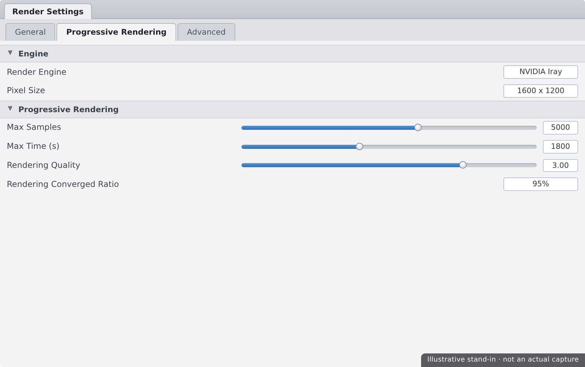
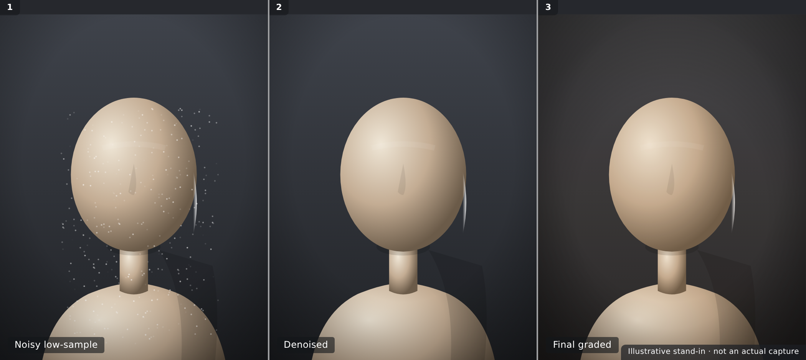

🎨 Lesson 3.3: Rendering with Iray
Everything so far — posing, shaping, surfacing, staging, lighting — has led to this moment: turning your scene into a finished picture. Rendering is where Iray takes your lit scene and computes the actual photograph, tracing millions of light paths until a clean image emerges. In this lesson you'll open the Render Settings pane for real, learn what samples and convergence mean and when to stop, use the denoiser to finish faster, iterate quickly with spot-renders, peek at render canvases for compositing power, and finally save and lightly polish an image worth putting in a portfolio. This is the payoff lesson — by the end you'll have a finished render.
🎯 Learning Objectives
By the end of this lesson, you will be able to:
- Navigate the Render Settings pane and its key tabs
- Explain what samples and convergence mean and when a render is "done"
- Set quality and stopping conditions so renders don't run forever
- Use the Iray denoiser to get a clean image in less time
- Iterate quickly with the Spot Render tool
- Understand what render canvases are and why compositors love them
- Save a finished render and apply light post-processing
Estimated Time: 60 minutes
Project: Your lit scene from Lesson 3.2, rendered to a clean, denoised, tone-mapped final image and saved as a PNG — the finished deliverable for all of Module 3.
In This Lesson
From Lit Scene to Final Image
You've been previewing in the viewport this whole time, but a preview is not a render. Rendering is the moment Iray computes the real image — simulating how every ray of light bounces around your scene until the picture matches physical reality. That's why Iray renders look photographic: they are a light simulation, not a fast approximation.
💡 The one-sentence version: Rendering traces millions of light paths through your lit scene, refining the image sample by sample until the noise clears and a clean, photographic picture remains.
📖 Definition
Path tracing: the rendering technique Iray uses, in which the engine follows light rays as they bounce through a scene, accumulating color and brightness. Each pass adds more traced paths (samples), and the more paths it traces, the more accurate — and less grainy — the image becomes.
Because path tracing is progressive, an Iray render starts grainy and gradually cleans up. Understanding that process is the whole game: it tells you what the settings do, why a render looks noisy at first, and when you can safely call it finished.
💡 The GPU does the heavy lifting
Iray is built to render on your NVIDIA GPU, which is dramatically faster than the CPU for path tracing. If your renders crawl, confirm Iray is using the GPU in Render Settings → Advanced. No compatible GPU? Iray falls back to CPU — slower, but the same final image.
⚠️ Important Note: Render time scales with resolution, lighting complexity, and quality settings. A big, softly-lit portrait with lots of area lights takes far longer than a small, simply-lit one. Start with a modest resolution while you dial things in, then render large only once you're happy.
The Render Settings Pane
Everything about how your image is produced lives in Render Settings (open it from Window → Panes → Render Settings, or the render menu). It's organized into tabs, and you only need a handful of settings to get great results.
📖 Definition
Render Settings: the pane that controls the render engine (Iray or Filament), image dimensions, quality and stopping conditions, tone mapping, the environment, and hardware options. It's the cockpit for turning your scene into a saved image.
The tabs you'll actually use
| Tab | What lives there | Why it matters |
|---|---|---|
| General / Editor | Render engine, dimensions, aspect ratio, where to render (to a new window or the viewport) | Set Iray and your output size here first |
| Progressive Rendering | Max Samples, Max Time, Rendering Quality (convergence) | Controls how long the render runs and when it stops |
| Tone Mapping | Exposure, ISO, shutter, f-stop, white balance | The exposure controls you met in Lesson 3.2 |
| Environment | Dome mode, HDRI map, intensity, rotation | The dome lighting from Lesson 3.2 |
| Advanced | GPU/CPU devices, the denoiser, instancing | Confirm the GPU and enable denoising here |
✅ Pro Tip — set your output size before you render
Decide dimensions up front on the General tab. Set the Pixel Size (e.g. 2000×2600 for a portrait) or pick an aspect ratio and let it constrain. Rendering at the final size from the start means your framing and depth-of-field match what you'll actually deliver.

⚠️ Important Note: Render Settings are saved with the scene, so the dimensions and quality you leave behind are what load next time. If a render comes out the wrong size or unexpectedly slow, check these settings before assuming something broke — the previous session's values are still in effect.
Samples & Convergence
The single most important idea in rendering: an Iray image is built up from samples, and it's "done" when it reaches convergence. Get these two ideas and the Progressive Rendering tab stops being mysterious.
📖 Definition
Sample: one pass of traced light paths across the image. Convergence: how close the image is to its final, noise-free state, shown as a percentage. Iray renders more and more samples, convergence climbs toward 100%, and the noise fades away as it does.
The three stopping conditions
Iray keeps rendering until it hits whichever of these comes first:
| Setting | Stops when… | Good starting value |
|---|---|---|
| Rendering Quality | The image reaches the target convergence | Leave near default; raise for cleaner results |
| Max Samples | That many samples have been traced | A few thousand for a clean portrait |
| Max Time | That many seconds have elapsed | A safety cap so renders can't run forever |
💡 Diminishing returns are real
Noise drops fast at first, then slowly. Going from 90% to 95% convergence can take as long as reaching 90% did in the first place — for a small, barely-visible gain. The art of efficient rendering is knowing when "clean enough" has arrived, especially with the denoiser helping (next section).
✅ Pro Tip — watch the convergence readout
During a render, Iray shows the convergence percentage and elapsed time in the render window's title or log. Watch it: when the percentage crawls and the image already looks clean, you can stop manually — you don't have to wait for a hard limit to be reached.
⚠️ Important Note: Setting Max Samples or Max Time too low stops the render while it's still grainy; too high wastes time chasing invisible gains. These are guardrails, not quality dials — the real quality lever is convergence, and the denoiser lets you stop earlier without penalty.
The Iray Denoiser
The best time-saver Iray offers is the denoiser — an AI filter that cleans up the remaining grain so you can stop rendering much earlier. It's the difference between a 40-minute render and a 10-minute one that looks just as clean.
📖 Definition
Iray denoiser: an AI-based post-process that predicts and removes render noise, turning a partly-converged, grainy image into a smooth one. It runs on the GPU and can preview live during the render, so you watch the grain melt away in real time.
You enable it in Render Settings → Advanced → Post Denoiser. The key control is when it starts — the denoiser kicks in after a chosen number of samples (its start iteration), so you give the render enough real detail before letting the AI smooth the rest.
💡 Denoise, but don't start too early
If the denoiser engages too soon — on a very noisy image — it can smear fine detail like skin pores, hair strands, and fabric weave into a waxy blur. Let the render build genuine detail for a few hundred samples first, then let the denoiser clean the leftover grain. Detail first, denoise second.
✅ Pro Tip — denoiser plus a sample cap is the sweet spot
A reliable recipe: enable the denoiser, set its start a few hundred samples in, and cap Max Samples at a modest number. You get a clean image quickly and predictably, without waiting for full convergence. This combo is how most artists render day to day.
⚠️ Important Note: The denoiser is a finishing tool, not a fix for bad lighting or under-sampling extreme cases. Very dark scenes with tiny bright lights (fireflies) can still fool it. If denoised results look plasticky, render a few more samples before it engages rather than leaning on the filter harder.
Spot-Render & Iterating
You rarely nail a render on the first try — you tweak a light, check, tweak a surface, check again. Waiting for a full render each time is agony. The Spot Render tool fixes that by rendering only the small region you care about.
📖 Definition
Spot Render tool: a tool (in the toolbar, or Tools menu) that lets you drag a rectangle in the viewport and render only that area at full quality. Perfect for checking a face, an eye highlight, or a fabric surface without re-rendering the entire frame.
The related habit is the Iray preview viewport mode: switch the viewport's draw style to Iray and it renders continuously as you work, giving you a live, physically-accurate view while you adjust lights and materials.
💡 Iterate on details, commit to the full render once
Use spot-renders and the Iray preview for the dozens of small decisions — is the eye catchlight right, is the skin too shiny, is the rim light too hot? Only when every detail checks out do you launch the one expensive full-resolution render. This can turn an afternoon of waiting into twenty minutes.
⚠️ Important Note: A spot-render shows a region at full quality but doesn't change your saved image — it's a check, not the deliverable. And the Iray preview is a live view that keeps your GPU busy; if the interface feels sluggish while adjusting, switch the viewport back to a fast draw style until you're ready to look again.
Render Canvases
Once you're comfortable, render canvases unlock serious post-processing power. They let Iray output extra image layers alongside the beauty render, so you can adjust the final picture in Photoshop or GIMP without re-rendering.
📖 Definition
Render canvas: an additional image buffer Iray writes during a render — such as depth, a specific light's contribution, or a beauty pass. Canvases are set up in Render Settings → Editor → Canvases and saved out for compositing.
Canvases artists reach for
| Canvas | What it captures | Use it to… |
|---|---|---|
| Beauty | The full final color image | Your main render — the picture itself |
| Depth | Distance from camera per pixel | Add fog or depth-of-field blur in post |
| Alpha | A transparency mask of the subject | Cut the figure out onto a new background |
| Per-light / LPE | One light's contribution on its own | Re-balance key, fill, or rim after rendering |
💡 Canvases are optional — but powerful
You can finish a great image with no canvases at all. But even one — a simple alpha mask — makes swapping backgrounds trivial, and a depth canvas lets you add atmospheric haze that would cost real render time to compute directly. They're a bridge from "renderer" to "compositor."
⚠️ Important Note: Canvases add memory and are written in formats like EXR that hold high dynamic range — great for compositing but not something you post to the web directly. Treat canvases as intermediate production files; your shareable deliverable is still the tone-mapped beauty image.
Saving & Post-Processing
The render finished and it looks great — now preserve it. When a render completes in its own window, use that window's Save button to write the image to disk. A little post-processing afterward takes a good render to a polished one.
📖 Definition
Post-processing: the light editing you do after rendering — in an image editor — to finish the look: cropping, subtle color grading, contrast, a touch of sharpening, and cleaning up stray artifacts. Small, tasteful adjustments; the render should already be strong on its own.
Saving well
- Format — save a PNG for a clean, lossless shareable image; use EXR only if you'll composite in high dynamic range.
- Resolution — keep the full-size render as your master; export smaller copies for the web from that.
- Naming — name and date your files so versions don't overwrite each other; a finished render is worth keeping.
✅ Pro Tip — a light grade goes a long way
In your editor, nudge contrast and saturation gently, add a subtle vignette to draw the eye, and sharpen just a touch. Resist heavy filters — the goal is to enhance the photographic render you already made, not to disguise it. Compare before and after; if you can't tell it's edited, you did it right.

⚠️ Important Note: Save the render image and save your scene — they're different things. The image is the finished picture; the scene is the recipe that made it. Keep both, so you can re-render at a larger size or tweak a light later without rebuilding everything from scratch.
Hands-on: Final Render
Let's render the lit scene from Lesson 3.2 into a finished image — configuring settings, using the denoiser, then saving and lightly grading the result.
🏋️ Exercise 1: Configure & Test Render
Objective: Set sane render settings and confirm the look with a spot-render.
Steps:
- In Render Settings → General, confirm the engine is Iray and set your Pixel Size (e.g. 2000×2600).
- On Progressive Rendering, set a modest Max Samples and a Max Time safety cap.
- Grab the Spot Render tool and drag a box over the face to check lighting and skin at full quality before committing.
🏋️ Exercise 2: Denoise & Full Render
Objective: Produce a clean final image efficiently.
Steps:
- In Render Settings → Advanced, enable the Post Denoiser and set its start a few hundred samples in.
- Launch a full render (to a new window) and watch the convergence percentage climb and the grain clear.
- When it looks clean and the percentage crawls, let it hit your limit or stop it manually.
💡 Hint — my render looks waxy or plasticky
The denoiser likely engaged too early. Raise its start iteration so the render builds real detail — skin pores, hair, fabric — before the AI smooths the rest. Also make sure your Max Samples isn't so low that the render stops while still very noisy. Detail first, denoise second.
🏋️ Exercise 3: Save & Grade
Objective: Preserve and lightly polish your finished render.
Steps:
- In the render window, click Save and write a full-size PNG with a dated filename.
- Open it in an image editor and apply a light grade — gentle contrast, a touch of saturation, a subtle vignette.
- Save your scene too, so you can re-render larger or tweak lights later — this is your Module 3 deliverable.
🎯 Quick Quiz
Question 1: In Iray, what does "convergence" describe?
Question 2: Why should the denoiser usually start a few hundred samples in, not immediately?
Question 3: You want to check whether the eye highlight looks right without re-rendering the whole frame. What do you use?
Best Practices
✅ Do's
- Confirm Iray is using the GPU in Advanced before a long render.
- Set your output size first so framing and depth of field match the deliverable.
- Use the denoiser with a sample cap for fast, predictable clean images.
- Spot-render details and use the Iray preview while iterating.
- Watch the convergence readout and stop when it's clean enough.
- Save both the image and the scene when you're done.
❌ Don'ts
- Don't render at full resolution while still iterating — test small, deliver big.
- Don't start the denoiser on a very noisy image — you'll get a waxy blur.
- Don't chase 100% convergence — diminishing returns waste hours for invisible gains.
- Don't over-process in post — a light grade beats heavy filters.
- Don't forget Render Settings save with the scene — check them if results surprise you.
💡 Pro Tips
- Keep a modest test resolution handy, then bump to full size for the final pass.
- Pair the denoiser with a start-iteration in the low hundreds for crisp, quick results.
- Add an alpha canvas so you can swap backgrounds without re-rendering.
- Use a depth canvas to add atmospheric haze or extra blur in post.
- Name and date your saved renders so versions never overwrite each other.
Summary
🎉 Key Takeaways
- Iray renders by path tracing — accumulating samples until the image converges and the noise clears.
- The Render Settings pane holds it all: engine, dimensions, Progressive Rendering, tone mapping, environment, and hardware.
- Max Samples, Max Time, and Rendering Quality are stopping conditions — Iray halts at whichever comes first.
- The denoiser lets you stop early and finish clean; start it a few hundred samples in to protect detail.
- Spot-render and the Iray preview speed up iteration; render canvases unlock compositing; then save and lightly grade your finished image.
📚 Additional Resources
- Render Settings — official Daz user guide
- Render Canvases — Daz documentation
- About Iray in Daz Studio
🚀 What's Next?
That's Module 3 complete — you can stage, light, and render a finished portrait. Next we add motion and physics. In Lesson 4.1 — dForce Cloth & Hair Simulation, you'll drape realistic dynamic clothing on your figure, run a dForce simulation, tune its settings, and fix the classic beginner problems — explosions and pokethrough — so your characters wear their outfits convincingly.
💡 You made a finished render!
Posed, shaped, surfaced, staged, lit, and now rendered and saved — you've taken a scene all the way to a photograph you can be proud of. That's the core Daz workflow, start to finish. Everything from here — simulation, animation, and the Blender and Unreal bridges — builds on the solid render foundation you just laid.